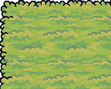
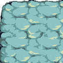
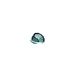
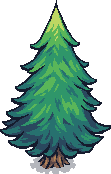
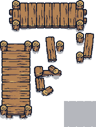
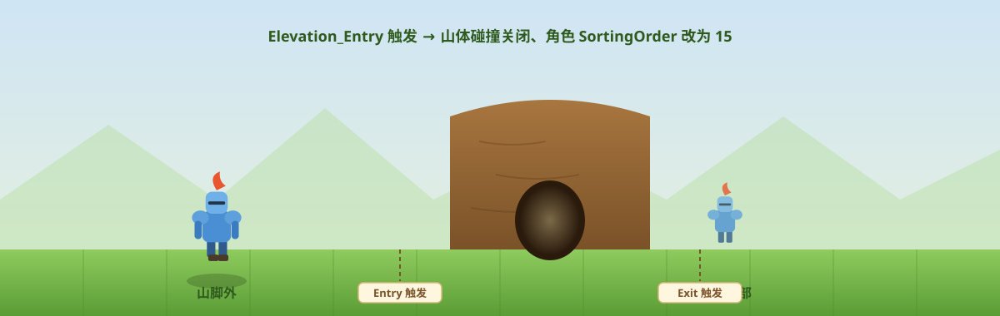
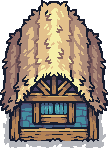
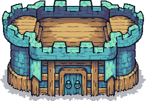
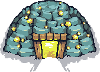

昨天说到哪了
Day 1 让骑士动了起来：42 行代码、FixedUpdate 里直接赋 velocity、用 localScale 翻转朝向。
今天做地图。我本来以为「铺瓦片」是最没技术含量的活——结果打开场景层级一看，发现光地形就分了 7 个 Tilemap 图层，每一层都有明确分工。这才明白俯视角地图的复杂度不在「画」，在遮挡关系。
七层地图：每一层都有理由
场景里 Elevation_Base 底下挂着 8 个子物体（7 个 Tilemap + 1 个 Sprite）。
几个素材长这样：





分层的对照表：
| 图层 | 类型 | Sorting Order | 碰撞 | 职责 |
|---|---|---|---|---|
| Water | SpriteRenderer | -10 | 无 | 水面，最底层的背景 |
| Rocks | Tilemap | -5 | 无 | 水里的石头装饰 |
| Ground | Tilemap | -1 | 无 | 草地/泥地，纯视觉地基 |
| Collision-Low | Tilemap + Collider | 0 | ✅ 启用 | 低处的墙体/障碍 |
| Non-Collision-Low | Tilemap + Collider | 0 | ✅ 启用 | 低处的装饰（树、灌木），有碰撞但不挡视线 |
| Collision-High | Tilemap + Collider | 15 | ✅ 启用 | 高处的墙体（山体），会挡住角色 |
| Non-Collision-High | Tilemap | 15 | ❌ | 高处的树冠，画在角色上面 |
| MountainBoundary | Tilemap + Collider | 0 | ⚠️ 默认关闭 | 山体内部的隐形围栏（下面详解） |
规律很清楚，用两个维度就能解释全部 7 层：
维度一：Low 和 High —— 决定「画在角色前面还是后面」
Low层的 Sorting Order 是 0，低于角色的 10 → 画在角色下面High层的 Sorting Order 是 15，高于角色的 10 → 画在角色上面
这就是俯视角的立体感来源：角色在山脚下走，山体会盖住他；角色走到树后面，树冠也会盖住他。
维度二：Collision 和 Non-Collision —— 决定「能不能穿过去」
Collision-*是有实体阻挡的Non-Collision-*虽然名字叫「无碰撞」，但都挂了 TilemapCollider2D——它们是可碰撞的装饰（树、石头）
技巧
命名有点反直觉：「Non-Collision」不是指没有碰撞，而是指不属于碰撞层（Collision 层是纯墙体，Non-Collision 层是带碰撞的装饰）。我是踩了一脚才想明白的。
两层碰撞怎么分工
Collision-Low 和 Collision-High 都启用了 TilemapCollider2D，但如果都起作用，角色就寸步难行了。实际的运作方式是：
角色通常走在 Low 层的地面上，High 层（山体）的碰撞体挡住他，让他不能直接走进山里。
而山体在视觉上要能遮住角色（Sorting Order 15 > 10）。于是出现一个矛盾：
角色站在山脚下 → 山体挡住角色 → 看起来像角色钻进山里了这正是我们要解决的第一个问题：怎么让角色能「走进」山体（比如进山洞、走山道）。
核心机制：用 Trigger 换碰撞体
这个工程最巧妙的地方来了。它没有写复杂的遮挡计算，而是用两个 Trigger + 一组碰撞体开关实现的。
可以这么直观地理解：左边的骑士在山脚（Non-Collision-Low），右边的骑士已经走进山体（Non-Collision-High），山体图层的物理碰撞被关掉，角色自然能穿过去：

代码只有 27 行：
Elevation_Entry.cs（站在入口区域时执行）：
public class Elevation_Entry : MonoBehaviour
{
public Collider2D[] mountainColliders; // 山体的碰撞体
public Collider2D[] boundaryColliders; // 山体内部的边界围栏
private void OnTriggerEnter2D(Collider2D collision)
{
if (collision.gameObject.tag == "Player")
{
foreach (var mountain in mountainColliders)
mountain.enabled = false; // ① 关掉山体阻挡
foreach (var boundary in boundaryColliders)
boundary.enabled = true; // ② 打开内部围栏
collision.gameObject.GetComponent<SpriteRenderer>().sortingOrder = 15; // ③ 角色提到 High 层
}
}
}Elevation_Exit.cs（站在出口区域时执行，三个操作全部反向）：
mountain.enabled = true; // 恢复山体阻挡
boundary.enabled = false; // 关掉内部围栏
GetComponent<SpriteRenderer>().sortingOrder = 10; // 角色回到 Low 层为什么这样设计？
关键在两个区域各自挂在哪里——我看层级才发现的：
| 脚本 | 挂载对象 | 触发体 |
|---|---|---|
Elevation_Entry | Non-Collision-Low（低层） | BoxCollider2D |
Elevation_Exit | Exit（它是 Non-Collision-Low 的子物体） | BoxCollider2D |
Entry 的触发区铺在山脚下（低层），Exit 的触发区在山体深处。所以完整流程是：
- 角色走到山脚，碰到
Entry→ 山体碰撞体关闭、内部围栏打开、角色排序提到 15 - 角色现在能自由走进山体区域了，同时因为排序是 15 = 与山体同级，不会被山体盖住（同级靠渲染顺序，角色在地形之后绘制）
- 角色走到深处碰到
Exit→ 一切还原，山体重新变成实体墙
它用「改变碰撞体的启停状态」代替了「判断遮挡关系」——不需要每帧做射线检测、不需要算深度，两个 Trigger 就切换了整个世界规则。
重要
这两个脚本引用的碰撞体是同一组（我在场景里核对过）：
mountainColliders=Collision-High+Collision-Low的 TilemapCollider2DboundaryColliders=MountainBoundary的 TilemapCollider2D（默认m_Enabled: 0）
这也解释了 MountainBoundary 为什么默认关闭：它只在角色进入山体期间才启用，作用是围住山体内部，防止角色从山的另一侧穿出去（那侧可能没有墙体）。
三个 Tilemap 的碰撞体细节
顺手记一下三个带碰撞的 Tilemap 的参数，都用了 TilemapCollider2D：
| 图层 | TilemapCollider2D | 说明 |
|---|---|---|
| Collision-High | Enabled ✅，IsTrigger ❌ | 实体阻挡 |
| Collision-Low | Enabled ✅，IsTrigger ❌ | 实体阻挡 |
| MountainBoundary | Enabled ❌（默认关） | 由 Entry/Exit 脚本临时开启 |
三者都没有用 CompositeCollider2D（m_UsedByComposite: 0）。
提示
Composite（复合碰撞体）能把一堆瓦片的小方块合并成一个大多边形，能显著减少碰撞体数量和卡边概率。这个工程没用，估计是地形还小。等后面地图变大、角色贴墙走开始卡顿的时候，这里就是第一个要改的地方。先记下。
Grid 与瓦片资源
素材里还有些非地形物件（房子、塔、金矿、羊），暂时没用上，先存着：



整个地形共用一个 Grid，参数是最朴素的：
- Cell Size =
1 × 1（一个格子 = 一个世界单位） - Cell Gap =
0 - Cell Layout = Rectangle，Swizzle = XYZ
瓦片资源放在 Assets/Sprites/Ground/ 下，一共 112 个 .asset，按类型命名：
| 前缀 | 数量 | 用途 |
|---|---|---|
Tilemap_Flat_* | 34 | 平地瓦片（草地/泥土的变体） |
Tree_* | 46 | 树（各种朝向、大小） |
Tilemap_Elevation_* | 27 | 山体/高度层瓦片 |
Shadows_* | 5 | 阴影 |
素材来自 Tiny Swords，精灵导入设置是 100 PPU（Pixels Per Unit）、spriteMode: 2（Multiple，一张图切多个精灵）、filterMode: 0（Point，像素风必须关掉平滑）。
Water 图层用的是 AnimatedTiles.prefab —— 挂了一个带 m_AnimatedSprites 的动画瓦片组件，让水面自己流动。
今天的理解
回头看，「俯视角地图」这件事的本质是两个独立维度的组合：
画在角色后面 画在角色前面
(Order < 10) (Order > 10)
实体阻挡 Collision-Low Collision-High
(Order 0) (Order 15)
可穿过 Ground / Rocks Non-Collision-High
(Order -1 / -5) (Order 15)
Water (Order -10)而 Non-Collision-Low 是个特例——它在 Low 层（Order 0，画在角色后面），但有碰撞。它同时承担了两种职责：既是低处的装饰（灌木），又是 Elevation_Entry 的触发区载体。
排序决定视觉层次，碰撞决定通行规则，两者完全解耦——所以才能用「切换碰撞体开关」的方式动态改变地图规则，而不动任何渲染设置。
这个思路我觉得可以用在很多地方：门、桥、可破坏的墙，本质都是「改变某个碰撞体的 enabled」。
今日清单
- ✅ 搞懂 7 层 Tilemap 的分工（Low/High × Collision/Non-Collision）
- ✅ 理解了
Elevation_Entry/Elevation_Exit的「钻山洞」机制 - ✅ 明白了
MountainBoundary为什么默认关闭 - ✅ 记下 3 个待优化点：
- 两个脚本代码几乎完全重复（只有三行相反），可以合并成一个带
bool entering参数的脚本 - 硬编码的
sortingOrder = 15 / 10，应该改成读取mountainColliders所属 Tilemap 的排序值，否则改层级就会错 - 触发用
gameObject.tag == "Player"字符串比较，可以换成 Layer 判断或CompareTag()（后者还能省一点性能）
- 两个脚本代码几乎完全重复（只有三行相反），可以合并成一个带
明天计划：相机跟随。现在相机是死的，角色一走就出画。该研究 Cinemachine 还是自己写一个了。
数值速查
| 项 | 值 |
|---|---|
| Grid Cell Size | 1 × 1 |
| 地形图层数 | 7 个 Tilemap + 1 个 Sprite |
| Sorting Order | Water -10 / Rocks -5 / Ground -1 / Low 0 / High 15 |
| 角色 Sorting Order | 10（平常）→ 15（进入山体时） |
| 触发切换的排序值 | 15（进）/ 10（出） |
| 瓦片资源总数 | 112 |
| 精灵导入 | 100 PPU，Multiple，Point 过滤 |
| 相机 | 正交 Size 5，背景 #314D79 |